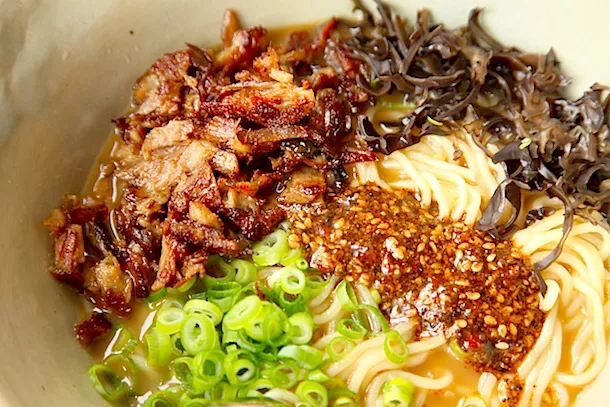

Miso Ramen With Crispy Shredded Pork and Burnt Garlic Sesame Oil | The Food Lab

Miso Rasmen OG
Miso Savory
How to make Ramen
Of the three major flavoring elements used for ramen in Japan—shio (salt), shoyu (soy sauce), and miso—miso is
the newest form, first appearing in the 1960's and originating in Japan's Northernmost prefecture, Hokkaido. The
chilly weather up there demands a heartier bowl of soup than the thinner salt and soy-based ramens of the south,
so locals took to whisking miso—fermented soy bean paste—into their lard-laden broth, creating the style known
as Sapporo ramen.
The result is rich and filling with a nutty-sweet aroma and an intensely savory flavor, thanks to the plentiful
glutamates and inosinates found in miso. It's the definition of umami in a bowl. In Hokkaido, it often comes
topped with sweet corn and a pat of butter.
Ingredients
- 3 pounds pig trotters, split lengthwise or cut crosswise into 1-inch disks (as your butcher to do this for
you)
- 2 pounds chicken backs and carcasses, skin and excess fat removed
- 2 tablespoons vegetable oil
- 1 large onion, skin on, roughly chopped
- 12 clove garlic cloves
- One 3-inch knob ginger, roughly chopped
- 2 whole leeks, washed and roughly chopped
- 2 dozen scallions, white parts only (reserve greens and light green parts for garnishing finished soup)
- 6 ounces whole mushrooms or mushroom scraps
- 2 pounds boneless skinless pork shoulder, in one chunk
Steps
- Place pork and chicken bones in a large stockpot and cover with cold water. Place on a burner over high heat
and bring to a boil. Remove from heat as soon as boil is reached.
- While pot is heating, heat vegetable oil in a medium cast iron or non-stick skillet over high heat until
lightly smoking. Add onions, garlic, and ginger. Cook, tossing occasionally until deeply charred on most
sides, about 15 minutes total. Set aside.
- Once pot has come to a boil, dump water down the drain. Carefully wash all bones under cold running water,
removing any bits of dark marrow or coagulated blood. Bones should be uniform grey/white after you've
scrubbed them. Use a chopstick to help remove small bits of dark marrow from inside the trotters or near the
chickens' spines.
- Return bones to pot along with charred vegetables, leeks, scallion whites, mushrooms, and pork shoulder. Top
up with cold water. Bring to a rolling boil over high heat, skimming off any scum that appears (this should
stop appearing within the first 20 minutes or so). Use a clean sponge or moist paper towels to wipe and
black or gray scum off from around the rim of the pot. Reduce heat to a bare simmer and place a heavy lid on
top.
- Once the lid is on, check the pot after 15 minutes. It should be at a slow rolling boil. If not, increase or
decrease heat slightly to adjust boiling speed. Boil broth until pork shoulder is completely tender, about 3
hours. Carefully remove shoulder with a slotted spatula. Transfer shoulder to a sealed container and
refrigerate until. Return lid to pot and continue cooking until broth is opaque with the texture of light
cream, about 6 to 8 hours longer, topping up as necessary to keep bones submerged at all times. If you must
leave the pot unattended for an extended period of time, top up the pot and reduce the heat to the lowest
setting while you are gone. Return to a boil when you come back and continue cooking, topping up with more
water as necessary.
- Once broth is ready, cook over high heat until reduced to around 3 quarts. Strain through a fine mesh
strainer into a clean pot. Discard solids. For an even cleaner soup, strain again through a fine-mesh
strainer lined with several layers of cheese cloth. Skim liquid fat from top with a ladle and discard. Whisk
in miso paste, 3 tablespoons of shoyu, and salt to taste. Keep warm.
- Shred pork shoulder with fingers until finely shredded and toss with remaining shoyu and mirin. Season to
taste with salt.
- To Serve: Bring a large pot of salted water to a boil. Meanwhile, place shredded pork shoulder in a 10-inch
non-stick skillet over medium-high heat. Cook, stirring and tossing occasionally, until crisp all over. Set
aside.
- Cook noodles according to package directions. Drain and transfer to warmed ramen bowls. Ladle broth over
noodles and drizzle with a tablespoon or two of burnt garlic-sesame-chili oil per bowl. Divide crisp pork
evenly between bowls. Cut eggs in half and add half to each bowl. Top with other toppings as desired and
serve immediately.